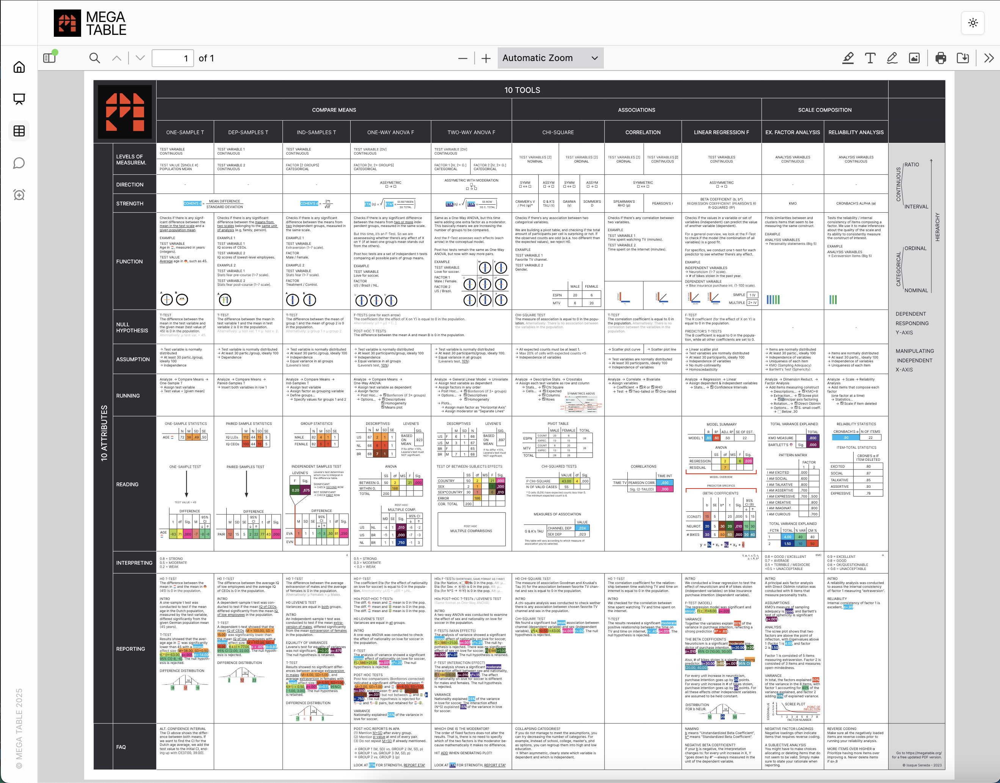
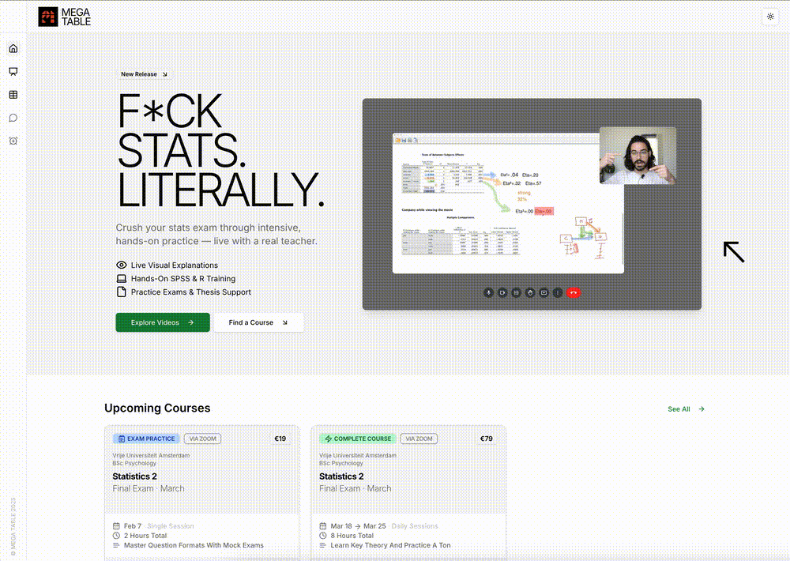
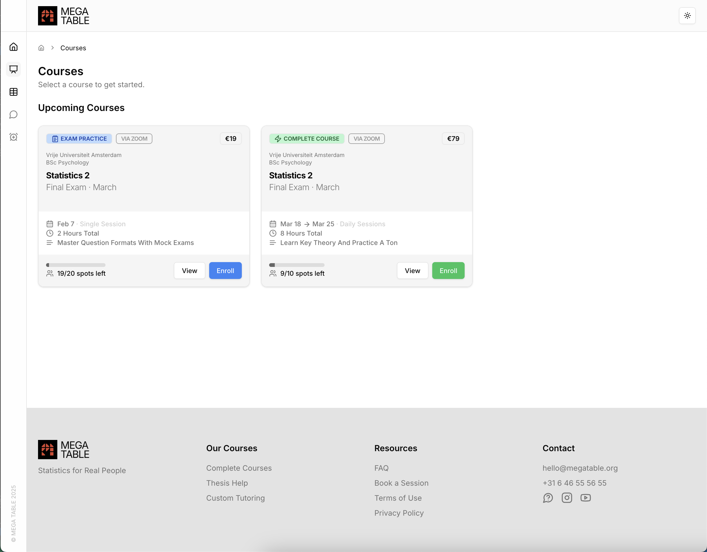
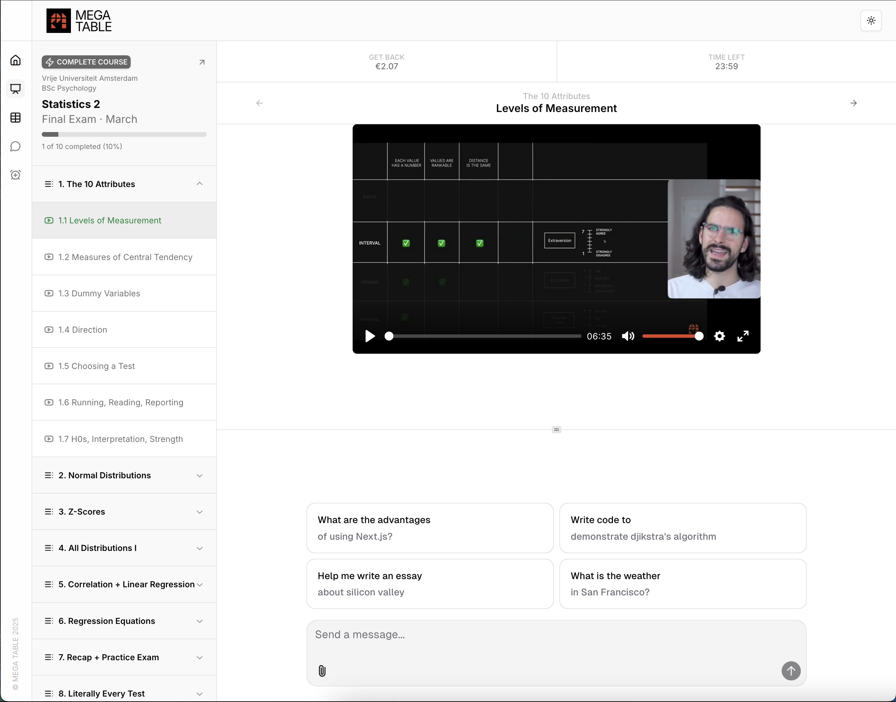
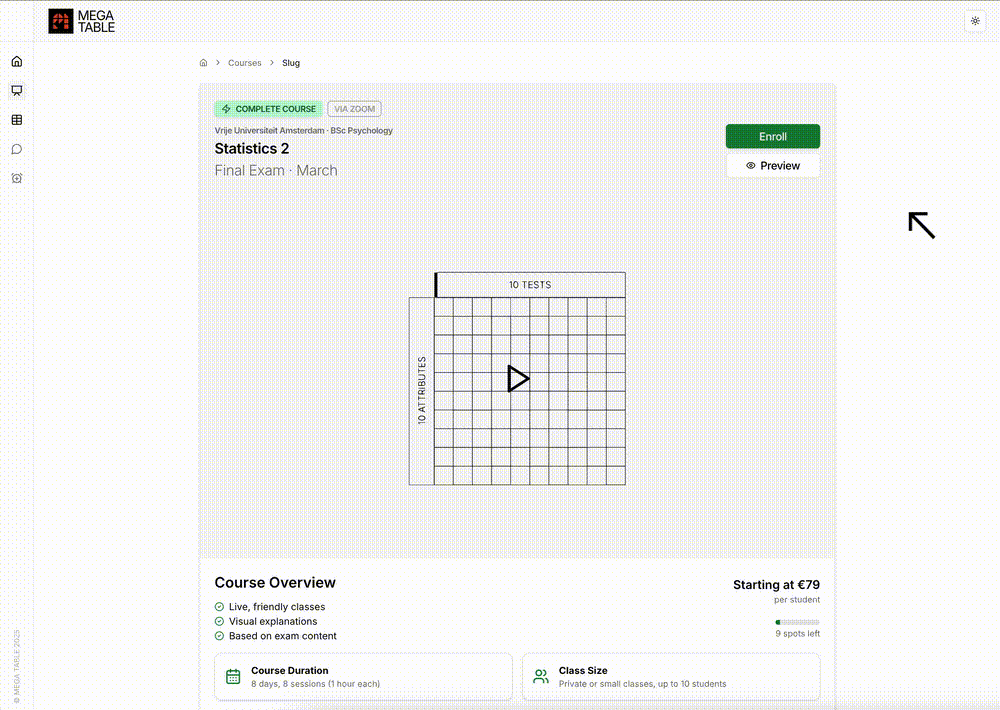

Many undergrad programmes in the humanities have incorporated
statistics as an obligatory discipline. The problem is: humanities
people hate math. MEGA TABLE emerged in response to that. It is a
modular method of teaching stats, heavily based on intuition and
simplifications: an online method used by over 2000 students from UvA
and VU over the years. Live on
megatable.org.
Founder
Qualitative Research
Statistical Analysis
Psychometrics
Research Design
Brand Strategy
Digital Design
Product Strategy
UX + Product Design

↑
The MEGA TABLE Summary Sheet
MEGA TABLE started out as a summary I put together with some friends. It began circulating around University of Amsterdam students. It remains very popular to this day, and has been featured as an official learning material of UvA.
You can download a free copy here.
The MEGA TABLE Summary Sheet
MEGA TABLE started out as a summary I put together with some friends. It began circulating around University of Amsterdam students. It remains very popular to this day, and has been featured as an official learning material of UvA.
You can download a free copy here.

Switching Gears
Eventually, things had to evolve. Users had been requesting video
instructions as well. So MEGA TABLE was born, as an online learning
platform.
The MEGA TABLE Method stands for liberation and accessibility through structure and intuition.
The MEGA TABLE Method stands for liberation and accessibility through structure and intuition.
Brand Archetypes
OUTLAW
Our target audience is sick of learning stats the boring old way.
They want to be liberated from exams and arbitrary gatekeeping of
stats as a "complex subject".
RULER
The way to get there is structure. The summary sheet (above) is
the backbone of their decision making, and gives them confidence
to tackle challenges as they come.

↑
Website Design
The website translates the outlaw archetype with a subversive, unapologetically brutalist design. The main call to action invites the user to "Explore Videos".
Website Design
The website translates the outlaw archetype with a subversive, unapologetically brutalist design. The main call to action invites the user to "Explore Videos".

↑
Finding Your Course
Each courses is tailored to a specific university exam.
Finding Your Course
Each courses is tailored to a specific university exam.

↑
Course View
With conversion in mind, the user can preview videos and AI chat even before logging in.
Course View
With conversion in mind, the user can preview videos and AI chat even before logging in.

↑
Sales Page
When reaching a paywall, the user is then prompted to enroll in the course choosing from one of three tiers. Prices shown not only serve as a means of upselling, but also as price anchors.
Sales Page
When reaching a paywall, the user is then prompted to enroll in the course choosing from one of three tiers. Prices shown not only serve as a means of upselling, but also as price anchors.